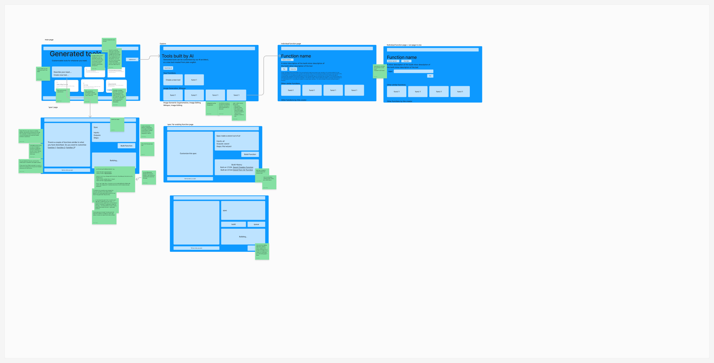
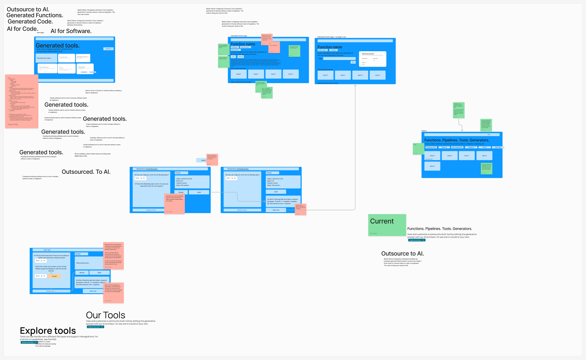
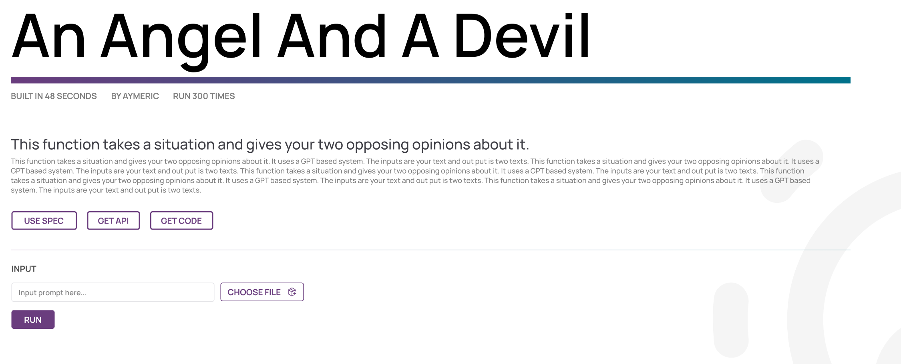

Agemo product, 25 storylines
People went from hearing what it does straight to a blank prompt. The work was building the middle.
- “Today journey largely skips over middle, goes from ‘learn capabilities’ to ‘create’”
- The middle has to show the system as accessible, give a reason to invest time, and build trust.
- Explore, a page for each tool, and remix become the steps between.
User journey board

New users will not write a prompt from nothing, so the first act became changing something that already exists.
- “We believe that new users will not be prepared to create from a blank prompt at first”
- The research had a name for it: “Blank page paralysis”
- “Remixing is the new creating”
Hypotheses 2 and 7 · user research

CodeWords replaces something people already do with a search, so the design has to beat a habit.
- “There are a variety of existing tools that are one google search away”
- “a new way of completing an existing behavior to users, not a new behavior”
- The test: do people who come for one tool branch into others?
Hypothesis 1

One rule settled most arguments: serve the person with a goal first, the browser second.
- “Favor people who have a goal to complete, and secondarily support people who are curious or idly browsing”
- On a tool's page: “‘similar’ before ‘other’ because ‘Intent’ before ‘curiosity’”
- Search turned down: “there is no point in replacing create with a far lower quality action”
Hypothesis 3 · wireframe round 4

A product for power users, dense on purpose, knowing most visitors never get that far.
- “Favor enabling power users over simplifying for casual users.”
- “A small percentage of users will make it here.”
- So the description, the detailed description and the spec all stay on the page.
Hypothesis 4 · User journey board

The deliverable was not screens. It was eight hypotheses, each with how to test it.
- Every slide: the bet, then “How to test”
- “it is valuable to see if this hypothesis holds true”
- The screens are the bets made visible.
Hypotheses deck

Instead of teaching the product first, the Architect teaches it while you build.
- “If you weren’t here to walk me through it, I would have dropped off already.”
- So the walk-through became part of the product: an Architect you can ask anything.
- “Major focus should be on the architect, and speaking to it”
User research · final UI

Making a tool went from one shot to a draft you keep working on.
- “Ideas rarely show up fully formulated.”
- “iterative rather than “one and done””
- A spec that stays editable, a history of builds, one spec to many tools.
Hypothesis 6 · wireframe round 2

Two bets pull against each other, and one Review button holds both.
- “We will look to the user for confirmation on the AI’s work”
- “Optimize for giving users something they can use, over getting into the details of how its going to be done”
- “I did not modify the new prompt because I was scared to break anything.” Review proposes; you accept or edit.
Hypotheses 5 and 8 · user research

Every dead end costs trust, so the design's first job is to stop wasting it.
- “Trust built w/ user needed this journey to happen”
- What to avoid: “Losing information / context the user has shared”
- A failed run, in the research: “feels like a dead end”
User journey board · user research

The product's own words were the first wall: people did not know what a function or an integration was.
- “Create a function that... I don’t know what a function is.”
- “these arent AI tools though. They are tools made with AI.”
- The box on the landing page asks for a tool, not a function.
CodeWords UX board · wireframe round 2

The headline was worked like a design problem: candidate after candidate until one could carry the product.
- “AI-tools. For every Job.”
- “Generated tools.”
- “Outsource to AI.” and under it “The code to bring your words to life.”
Wireframe rounds 2 to 5

Each screen was judged by one question: what does the person now believe is happening?
- The loop every screen has to close: “User action”, “System state change”, “Feedback for state change”, “User mental model update”
- During a build: “Do I just sit and wait?”
- At the output: “MIssing end point (what do i do with this now?)”
CodeWords UX board

The product is a staircase, and each page is a step up it.
- “Tool consumer”, “Tool remixer”, “Tool Builder”, “Tool Chainer”
- Run a tool, then change one, then write your own.
- The top step: “a sub-function for another codewords function”
CodeWords UX board

The product was designed as a conversation between two people, five rounds of it, on one board.
- Round one: “How is explore different from the main page?”
- Round four: “is this intent and curiosity? how are we grabbing intent”
- Round five: the Architect page appears.
User journey board, five rounds

Exploring and creating started as separate flows. The work was joining them.
- “Explore flow” and “Create flow”
- “need to figure out how these two flows can merge together”
- Customize on any tool opens the Architect with that tool's prompt already filled in.
User journey board

The landing page argues with examples: each tool on it was picked for the feeling it sets off.
- “Feels hard to do with available tools”
- “it should be easy and free and here it is”
- “If we could give the user any way to be wow-ed in their first experience”
Wireframe round 2 · final UI

The product is as much the things turned down as the things built.
- Search: “the team doesnt want to prioritize search”
- Free runs: “no point in getting a person to “run” if they dont want to commit”
- The community user: “at the moment we dont need to design for that”
Wireframe rounds 3 and 4 · User journey board


Most of the design is for the cases where something is missing: no description, no author, no credits.
- “If author not defined, use “Codewords””
- “If no description, how do we fail gracefully?”
- “Fail case for running out of credits. Where? On run? on use?”
Final UI, the notes beside the screens


A build takes time, and nobody knew what to do while it ran.
- “Things are happening. But how long should I wait for?”
- “The information is too subtle.”
- The build log names who is working: “Architect: Planning high level steps”
CodeWords UX board · user research · wireframe round 5

Whether a tool can be built should be known before the build, not after it.
- “Ideally the user should know before they even approach this stage.”
- “It has told me before I’ve spent any credits attempting to build it which is nice”
- Review moves that answer into the conversation, before Build.
CodeWords UX board

A generated tool needs a product page: what it does, proof that it works, what to do with it.
- “built in 48 seconds” and “run 300 times”
- Use the spec, get the API, get the code, or just run it.
- “we should show the most similar functions, always”
Wireframe round 4 · final UI


Users loved one thing in the old product. The redesign made it the whole product.
- “The prompt helper is genius.”
- “They love “Check & Enhance Prompt” but...”
- The Architect: “wokrs like check and enhance today but better characterization of the dialog”
User research · wireframe round 5

What the team is good at is speed, so speed is what the product says and shows.
- “I think this team has speed as a strength and iteration as a strength.”
- “instead of “create software” it is “create software faster””
- On every tool: “generated in x seconds, the equivalent of y dev hours”
User journey board · wireframe round 3 · hypothesis 8

One grammar runs from the first box to the last page: what goes in, what comes out, the steps between.
- “Describe the inputs, outputs and steps.”
- Tools sorted by what they turn into what: “okay i think input->output better ;-)”
- The spec, the build and the run page all read Input, Steps, Output.
Wireframe rounds 2 and 5